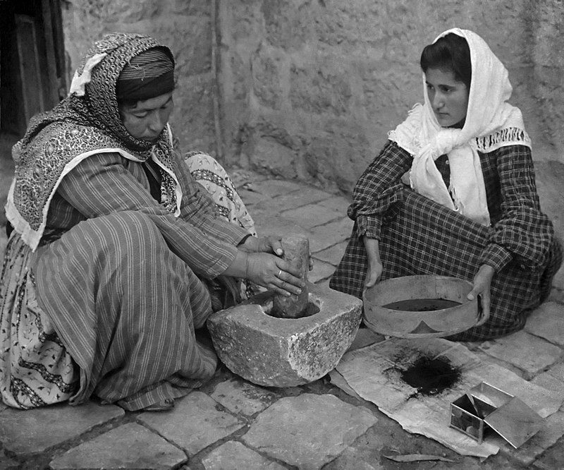

Coffe evolution
From past centuries to the present
Introduction
The history of coffee dates back to centuries of old oral tradition in modern day Ethiopia, however neither where coffee was first cultivated nor direct evidence of its consumption prior to the 15th century have been found. Sufi monasteries in Yemen employed coffee as an aid to concentration during prayers.[1] Coffee later spread to the Levant and Persia in the early 16th century; it caused some controversy on whether it was halal in Ottoman and Mamluk society. Coffee arrived in Italy the second half of the 16th century through commercial Mediterranean trade routes, while Central and Eastern Europeans learnt of coffee from the Ottomans. By the mid 17th century, it had reached India and the East Indies. Coffee houses would establish themselves in Western Europe by the late 17th century, especially in England and Germany. One of the earliest cultivation of coffee in the New World was when Gabriel de Clieu brought coffee seedlings to Martinique in 1720. These beans later sprouted 18,680 coffee trees which enabled its spread to other Caribbean islands like Saint-Domingue and also to Mexico. By 1788, Saint-Domingue supplied half the world's coffee. By 1852, globally, Brazil became the largest producer of coffee and has held that status ever since. The period since 1950 saw the widening of the playing field due to the emergence of several other major producers, notably Colombia, Ivory Coast, Ethiopia, and Vietnam; the latter overtook Colombia and became the second-largest producer in 1999.[2] Modern production techniques along with the mass productization of coffee has made it a household item today.
